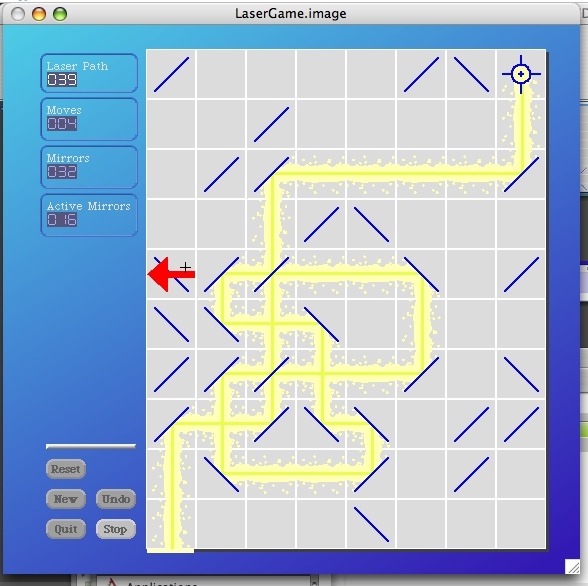

So far, so good. Quit the Squeak development environment again without saving. Now we launch the new LaserGame image. The easiest way to do this is to pick up the "LaserGame.image" file and drop it on top of the Squeak application (or virtual machine file). That should cause our new LaserGame application to launch as a Squeak image.
The Laser Game application launches. I was able to re-size the Squeak window and begin playing.
When I clicked on the Quit button in the game, it prompted me to ensure I really wanted to quit and then promptly exited Squeak.
That's a pretty good start. There's still more to do. The facilities are not restricted enough just yet. I was able to call up a Squeak World menu, for example. So there's still some things to do. But we do have a "deliverable" of a sorts and the development environment intact for its management and creation.